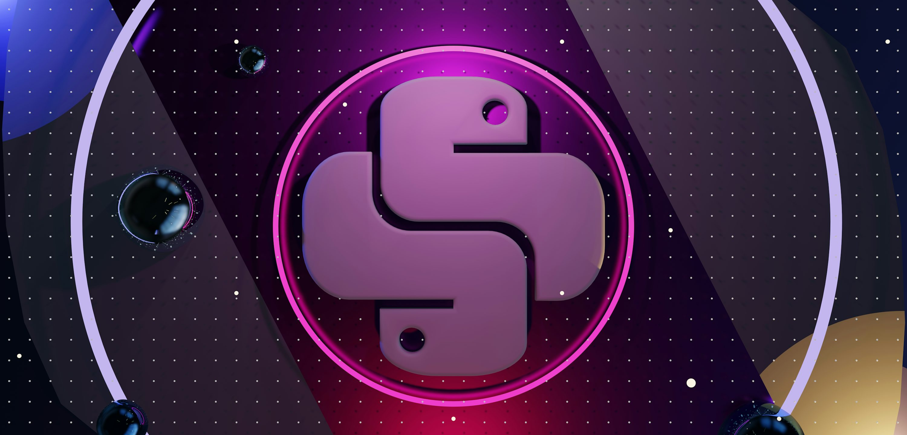
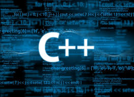
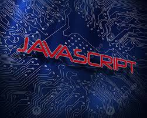
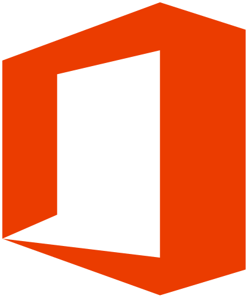
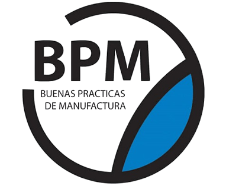
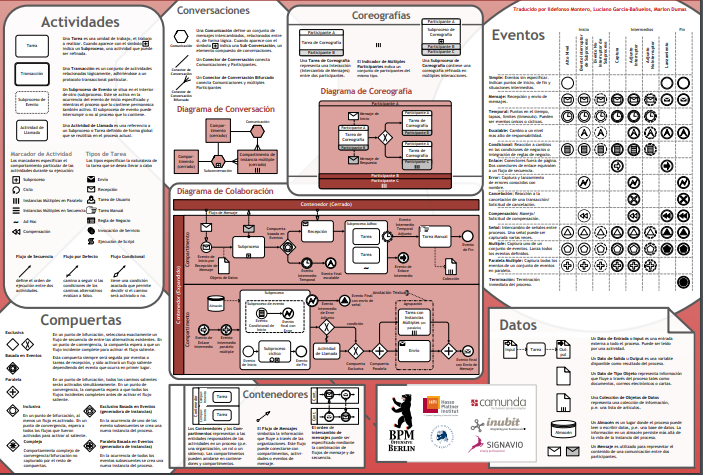
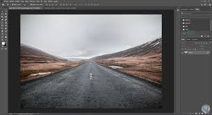

Python
No solo manejamos Python; creamos prototipos de Inteligencia Artificial listos para el despliegue empresarial.
Ingeniero en Sistemas de Información


No solo manejamos Python; creamos prototipos de Inteligencia Artificial listos para el despliegue empresarial.


Más allá de la maquetación; somos ingenieros del front-end. Creamos estructuras SEO-optimizadas y hojas de estilo eficientes que se traducen en tiempos de carga rápidos y un mantenimiento simplificado a escala.


Ingeniería de software robusta y escalable. Dominio de las características modernas de C++ para desarrollar arquitecturas de back-end, firmware y sistemas de baja latencia con control total sobre los recursos del sistema.

Superan las expectativas de eficiencia y velocidad. Me dedico a la creación de productos tecnológicos con arquitectura sólida y un enfoque total en la escalabilidad y el control de recursos.

Maestría en la suite Office para impulsar la eficiencia operativa. Especializado en automatizació y estandarización de documentos para reducir errores manuales y acelerar la toma de decisiones..


No solo diagramo procesos; implemento soluciones de automatización de principio a fin. Dominio en la integración y configuración de Sistemas de Gestión de Procesos de Negocio (BPMS) para llevar procesos críticos del análisis a la ejecución automatizada y monitoreada.

Transformo datos complejos en historias visuales claras y accionables. Diseño y despliego dashboards interactivos y KPI estratégicos que facultan a los líderes para una toma de decisiones rápida y basada en evidencia.


Más allá de lo básico, me especializo en Composición Digital de Alto Nivel y Retoque Creativo profesional. Aplico técnicas no destructivas para la manipulación avanzada de imagen, matte painting y fotomontaje, garantizando la calidad artística y la optimización para cualquier plataforma digital.